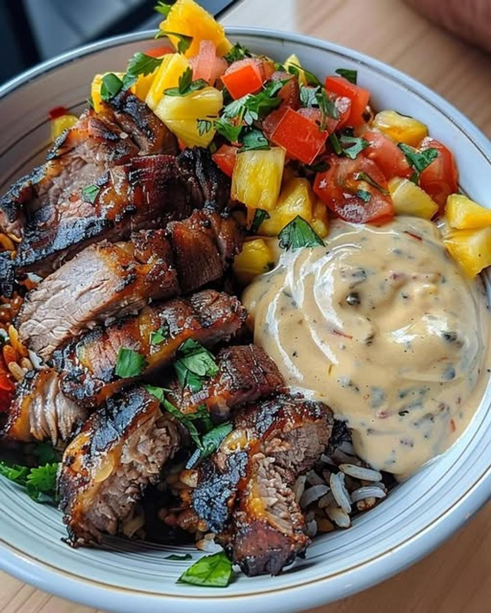

Caribbean Jerk Pork Bowl with Pineapple Salsa

Servings: 4
Active Time: 15 mins
Total Time: 35 mins
Ingredients
- 1 lb pork loin, sliced
- 1/4 cup jerk seasoning
- 1 cup pineapple, diced
- 1/2 red onion, finely chopped
- 1/4 cup fresh cilantro, chopped
- 1 cup jasmine rice
- 1 cup coconut milk
- 1/2 cup water
- Salt and pepper to taste
- 1/4 cup mayonnaise
- 1 clove garlic, minced
- 1 tsp lime juice
- Olive oil
Directions
- 1
- Step 1: Marinate Pork 2 Coat the sliced pork loin with jerk seasoning. Let it marinate for at least 30 minutes in the refrigerator. 3
- Step 2: Prepare Pineapple Salsa 4 In a bowl, mix diced pineapple, finely chopped red onion, and chopped cilantro. Season with salt and pepper to taste. Set aside. 5
- Step 3: Cook Coconut Rice 6 In a saucepan, combine jasmine rice, coconut milk, water, and a pinch of salt. Bring to a boil, then reduce heat, cover, and simmer for 15-20 minutes until rice is cooked. 7
- Step 4: Grill Pork 8 Heat a grill pan or skillet over medium-high heat with olive oil. Grill the marinated pork slices for about 4-5 minutes per side or until cooked through. 9
- Step 5: Prepare Caribbean Aioli 10 In a small bowl, mix mayonnaise, minced garlic, and lime juice to make the Caribbean aioli.